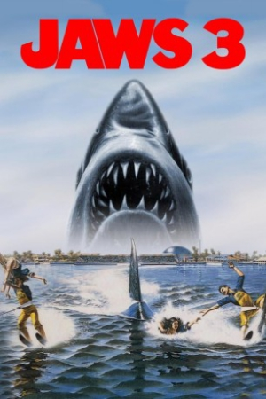

Country:United States, 99 minutes
Spoken languages:English
Genres:Thriller, Horror
Director(s):Joe Alves
Writer(s):Peter Benchley, Carl Gottlieb, Richard Matheson
Video Codec:Unknown
Number: 2366


Certification:PG
Storyline:
This third film in the series follows a group of marine biologists attempting to capture a young great white shark that has wandered into Florida's Sea World Park. However, later it is discovered that the shark's 35-foot mother is also a guest at Sea World. What follows is the shark wreaking havoc on the visitors in the park.
Cast:

Medium: Bluray,
Comments: Part of: Jaws 3-Movie Collection
Loaned: No
Aspect ratio: Unknown